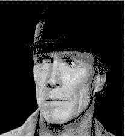

Contents | Features | Reviews | News | Archives | Store |
 |
|
| Movie Credits | Buy It! |
Absolute Power
Review by Carrie Gorringe
|  | Directed by Clint Eastwood. Starring Clint Eastwood, Gene Hackman, Screenplay by William Goldman, |
Consider the case of Luther Whitney (Eastwood), a master burglar on the verge of retirement, in a profession that doesn’t allow for a pension plan, and especially not for a post-larceny career as a cultured, slightly louche, amateur artist. So Whitney plans one final score for lifetime security. His target is the home of Walter Sullivan (Marshall), a billionaire with a taste for rare coins, expensive jewelry and a young wife with a taste for adultery. Whitney’s meticulous preparations for his heist have anticipated everything, except for the fact that Mrs. Sullivan has decided not to leave town with her husband, and has chosen the night of Whitney’s break-in for a rendezvous with her lover, the President of the United States (Hackman). Luther is forced to hide in the bedroom closet and witness Mrs. Sullivan’s accidental murder. A cover-up is initiated by the President’s Chief of Staff, Gloria Russell (Davis), but a couple of key errors are made by both Whitney and Russell, with the result that each knows about the other’s whereabouts and activities that night. A new plot is hatched by Russell to frame Whitney for Mrs. Campbell’s murder, if the detective assigned to the case, Seth Frank (Harris), will just co-operate in assembling the contradictory evidence to conveniently fit Russell’s point of view. Meanwhile, Whitney is trying to clean up old emotional ends with his bitterly estranged daughter, Kate (Linney), who, in what is supposed to be an irony of ironies, is a prosecuting attorney with no time for Dad, his lectures on better eating, and his seemingly minor problem. Soon, however, certain corrupt members of the Secret Service are taking potshots at Kate, and she and papa have to reconcile in order to save each other’s lives.
The evocation of Lord Acton’s old dictum about all power corrupting, with absolute power corrupting absolutely, is rather appropriate in the case of this film -- for all of the wrong reasons. Many of those wrong reasons have to do with Clint playing the role of artful codger. The wry wit just flows from Eastwood’s character like sap in January -- and it has the same cloying consistency, as in Whitney’s confession to Frank, in exaggerated sotto voce, that he "loves true crime." The overall impression is unnerving -- never before has Clint Eastwood been trying so hard to be lovable. He’s trying so hard, in fact, that you almost expect to see a tag bearing the name "Gund" protruding from his rear end at some point or another in the film (although he, in turn, is outdone by an outrageous Judy Davis, whose performance is so overblown that any semblance of suspense in any scene in which she appears is entirely coincidental). Even in his "Any Which Way" films, Clint knew when to shed the jocularity and start sneering and swinging. In Absolute Power, Clint is so adorable that you almost expect to see a tag bearing the name "Gund" protruding from his rear end at some point or another in the film (although even he is outdone by an outrageous Judy Davis, whose performance is so overblown that any resemblance to reality in any scene in which she appears is entirely coincidental) swinging. Arguably, after a career spent playing snarling men with no names for Leone and the eponymous Dirty Harry as defined by Don Siegel, Eastwood has probably earned the right to, as they say, get in touch with his inner child, cinematically speaking, and he does make something of a persuasive case for this approach, depending upon your personal opinion of how adorable Clint is.
But, even if you have a penchant for this sort of thing, the pleasure it provides is purely exclusive of what unfolds on screen; in order for Eastwood’s performance to make any sense, it really has to be watched while ignoring the wholesale destruction of plausibility occurring within the narrative’s confines. To understand what is really wrong with Absolute Power, it is necessary to return to Eastwood’s successful collaboration with Don Siegel. Having worked with Siegel throughout the late 1960s and early ‘70s (in such films as Coogan’s Bluff, Two Mules for Sister Sara, The Beguiling and, of course, 1971’s Dirty Harry, returning one more time to the Siegel fold in 1979 for Escape from Alcatraz), Eastwood should have recalled how Siegel allowed the irony of a situation to emerge as a side effect of, and never the cause of, anything which was critical for narrative development. Moreover, the humor in a Siegel film was always tinged with a sufficiently nasty aftertaste that prevented it from becoming the lone focal point; the monstrousness of a situation and/or individual was always more important, and the humor acted to emphasize the point. Even in his post-Siegel work as a director, Eastwood never really allowed the humor to overpower the narrative (such as in his 1973 near-satire of the silent, avenging lawman, High Plains Drifter). This is not the case here; indeed, the irony that Eastwood and Goldman have set up in Absolute Power is so overwhelming that it has the unintended side effect of undermining any interest in the ratiocinative aspects of how the villains of the piece are going to get theirs ( it’s a foregone conclusion that the concept of "whether" is never under consideration here). So, the film lurches from comedic setup to comedic setup -- with a segue or two in between for some obligatory "serious" scenes -- without inspiring any real suspense; the murder sequence that opens the film -- one which is exemplary in its narrative and camera setups -- is chillingly taut and promises more than the overall product will deliver. Indeed, the murder mystery is really nothing more than a pretext for cuteness, with Clint (and the rest of the cast) nudging the audience in the ribs at every possible opportunity just in case its members didn’t get the joke. As for me, I was longing for Clint to explain how a .357 magnum would blow some punk’s head clean off -- at least it would have been a welcome break from the film’s tedious penchant for stating the obvious.
Contents | Features | Reviews | News | Archives | Store
Copyright © 1999 by Nitrate Productions, Inc. All Rights Reserved.